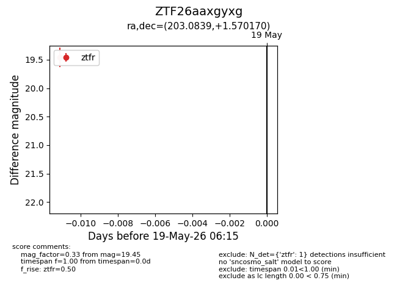
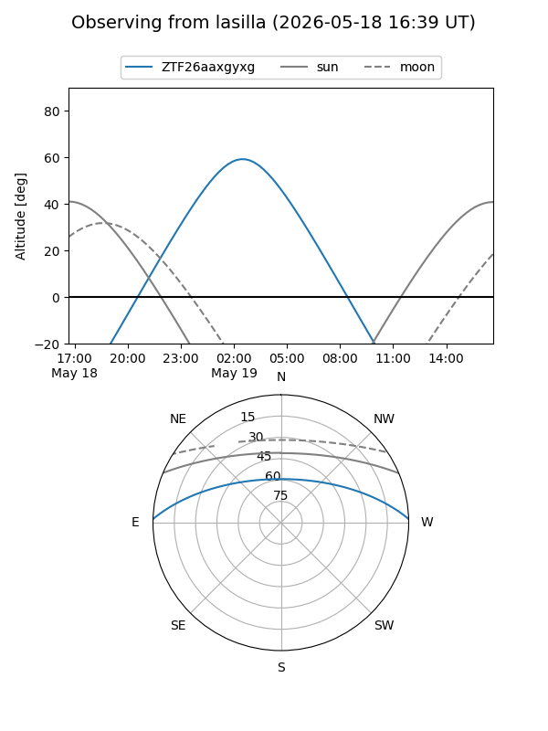
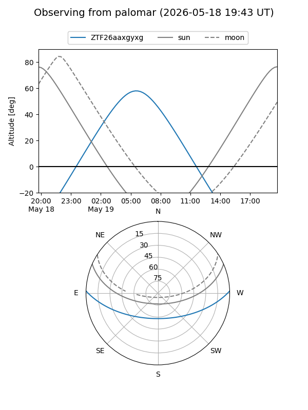

ZTF26aaxgyxg
Target ZTF26aaxgyxg at 2026-05-19 06:17
Aliases and brokers:
FINK: link
Lasair: link
ALeRCE: link
alt names
ZTF26aaxgyxg (ztf,fink_ztf)
Coordinates:
equatorial (ra, dec) = 203.0839,+1.57017
equatorial (HMS+DMS) = 13:32:20.13,+01:34:12.61
galactic (l, b) = (325.6314,+62.62559)
Flags:
Photometry:
last ztfr=19.45
1 ztfr detections
Lightcurve

Visibility


Additional plots